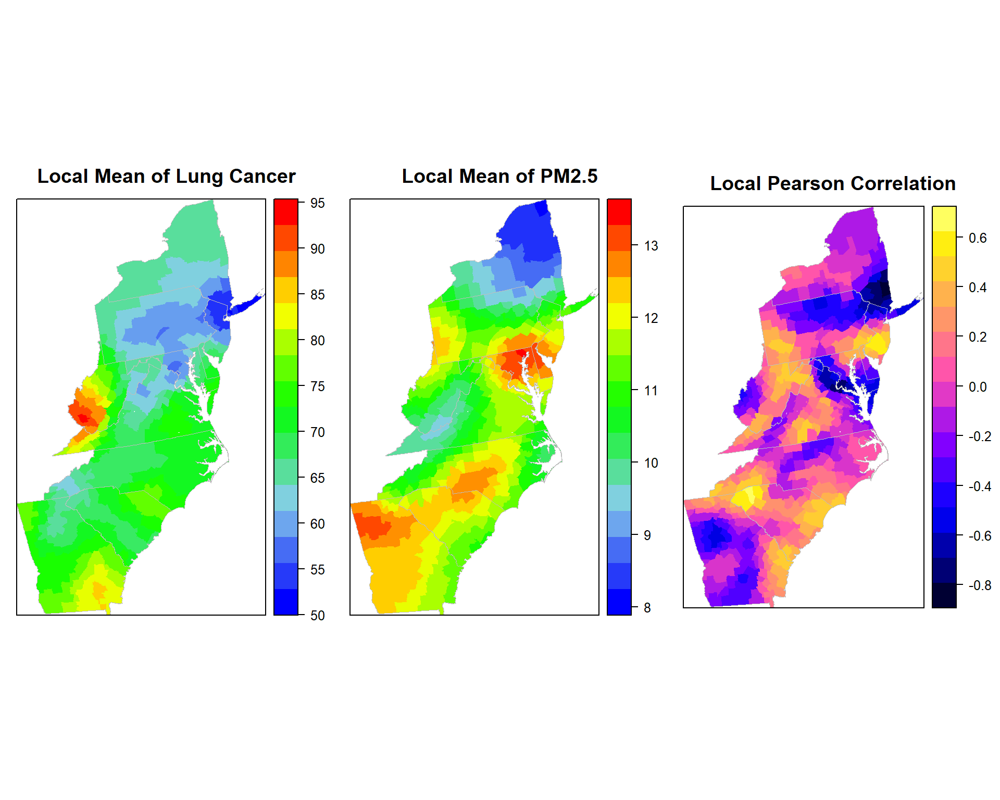
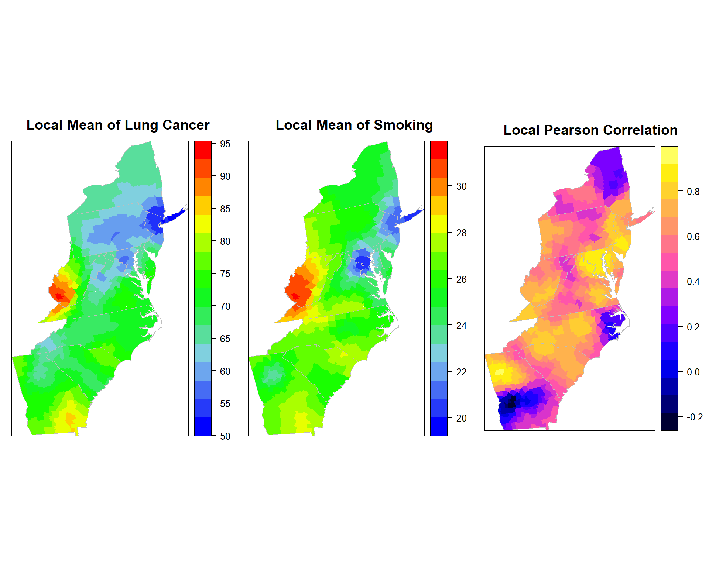

Geographically Weighted Summary Statistics
To visualize geographical variation in the statistical distribution, geographically weighted local summary statistics (mean, standard deviation and Pearson’s correlation has described Brunsdon et al., (2002). This lessons we will leanr how to calculate GW means, GW standard deviation using GWModel package (Gollini et al., 2013) in the R statistical computing environment
Load R packages
library(GWmodel) ### GW models
library(sp) ## Data management
library(spdep) ## Spatial autocorrelation
library(gstat) ## Geostatistics
library(RColorBrewer) ## Visualization
library(classInt) ## Class intervals
library(raster) ## spatial data
library(gridExtra) # Multiple plot
library(ggplot2) # Multiple plotLoad Data
The data use in this lesson could be found here.
# Define data folder
dataFolder<-"D:\\Dropbox\\WebSite_Data\\R_Data\\Data_GWR\\"
COUNTY<-shapefile(paste0(dataFolder,"COUNTY_ATLANTIC.shp"))
state<-shapefile(paste0(dataFolder,"STATE_ATLANTIC.shp"))
mf<-read.csv(paste0(dataFolder,"data_atlantic_1998_2012.csv"), header=T)Create a data frame
SPDF<-merge(COUNTY,mf, by="FIPS")
names(SPDF)## [1] "FIPS" "ID" "x.x" "y.x" "REGION_ID"
## [6] "DIVISION_I" "STATE_ID" "COUNTY_ID" "REGION" "DIVISION"
## [11] "STATE" "COUNTY" "x.y" "y.y" "Rate"
## [16] "POV" "SMOK" "PM25" "NO2" "SO2"polys<- list("sp.lines", as(state, "SpatialLines"), col="grey", lwd=.8,lty=1)
col.palette<-colorRampPalette(c("blue", "sky blue", "green","yellow", "red"),space="rgb",interpolate = "linear")We will use gwss() function to calcyulate GW summary statistics of cancer Rate and PM25, also pearson correlation coefficents between these two variables. We will use ** bandwith (bw)** = 48 and “bisqure” kerbel function. There are five kernel functions available in GW package:
gaussian: wgt = exp(-.5*(vdist/bw)^2);
exponential: wgt = exp(-vdist/bw);
bisquare: wgt = (1-(vdist/bw)2)2 if vdist < bw, wgt=0 otherwise;
tricube: wgt = (1-(vdist/bw)3)3 if vdist < bw, wgt=0 otherwise;
boxcar: wgt=1 if dist < bw, wgt=0 otherwise
If adaptive kernel = **TRUE*, means the bandwidth (bw) corresponds to the number of nearest neighbours (i.e. adaptive distance); default is FALSE, where a fixed kernel is found (bandwidth is a fixed distance)
After running gwss(), following output will be created:
X_LM GW mean
X_LSD GW Standard deviation
X_Lvar GW Variance GW Standard deviation squared
X_LSKe GW Skewness
X_LCV GW Coefficient of variation GW mean divided by GW Standard deviation
Cov_X.Y GW Covariance
Corr_X.Y GW Pearson Correlation
Note that X and Y should be replaced by the names of the actual variables being investigated.
Lung Rate vs PM2.5
gwss.pm25 <- gwss(SPDF,vars = c("Rate", "PM25"),
kernel="bisquare", adaptive=TRUE, bw=48)gwss.pm25## ***********************************************************************
## * Package GWmodel *
## ***********************************************************************
##
## ***********************Calibration information*************************
##
## Local summary statistics calculated for variables:
## Rate PM25
## Number of summary points: 666
## Kernel function: bisquare
## Summary points: the same locations as observations are used.
## Adaptive bandwidth: 48 (number of nearest neighbours)
## Distance metric: Euclidean distance metric is used.
##
## ************************Local Summary Statistics:**********************
## Summary information for Local means:
## Min. 1st Qu. Median 3rd Qu. Max.
## Rate_LM 52.7799 64.9372 69.6305 73.5792 92.558
## PM25_LM 8.2401 10.8570 11.6318 12.2853 13.278
## Summary information for local standard deviation :
## Min. 1st Qu. Median 3rd Qu. Max.
## Rate_LSD 4.76587 7.71522 9.10529 10.83088 16.261
## PM25_LSD 0.13631 0.41391 0.62050 0.87379 1.483
## Summary information for local variance :
## Min. 1st Qu. Median 3rd Qu. Max.
## Rate_LVar 22.71352 59.52483 82.90636 117.30809 264.4128
## PM25_LVar 0.01858 0.17132 0.38503 0.76351 2.1992
## Summary information for Local skewness:
## Min. 1st Qu. Median 3rd Qu. Max.
## Rate_LSKe -1.20800 -0.15435 0.13821 0.42117 1.8327
## PM25_LSKe -2.49278 -0.64593 -0.16305 0.38104 1.9453
## Summary information for localized coefficient of variation:
## Min. 1st Qu. Median 3rd Qu. Max.
## Rate_LCV 0.068524 0.113617 0.131623 0.155867 0.2273
## PM25_LCV 0.011049 0.036055 0.057189 0.078496 0.1392
## Summary information for localized Covariance and Correlation between these variables:
## Min. 1st Qu. Median 3rd Qu. Max.
## Cov_Rate.PM25 -9.396809 -1.079663 -0.133940 1.042163 5.8661
## Corr_Rate.PM25 -0.794845 -0.234503 -0.034965 0.187568 0.6243
## Spearman_rho_Rate.PM25 -0.740171 -0.215073 -0.030902 0.187173 0.6360
##
## ************************************************************************p1.pm25<-spplot(gwss.pm25$SDF,"Rate_LM", main = "Local Mean of Lung Cancer",
sp.layout=list(polys),
col="transparent",
col.regions=col.palette(100))
p2.pm25<-spplot(gwss.pm25$SDF,"PM25_LM", main = "Local Mean of PM2.5",
sp.layout=list(polys),
col="transparent",
col.regions=col.palette(100))
p3.pm25<-spplot(gwss.pm25$SDF,"Corr_Rate.PM25", main = "Local Pearson Correlation",
sp.layout=list(polys),
col="transparent"
)grid.arrange(p1.pm25, p2.pm25, p3.pm25, ncol=3)
Lung cancer Rate vs SMOK
gwss.smok<- gwss(SPDF,vars = c("Rate", "SMOK"),
kernel="bisquare", adaptive=TRUE, bw=48)p1.smok<-spplot(gwss.smok$SDF,"Rate_LM", main = "Local Mean of Lung Cancer",
sp.layout=list(polys),
col="transparent",
col.regions=col.palette(100))
p2.smok<-spplot(gwss.smok$SDF,"SMOK_LM", main = "Local Mean of Smoking",
sp.layout=list(polys),
col="transparent",
col.regions=col.palette(100))
p3.smok<-spplot(gwss.smok$SDF,"Corr_Rate.SMOK", main = "Local Pearson Correlation",
sp.layout=list(polys),
col="transparent"
)grid.arrange(p1.smok, p2.smok, p3.smok, ncol=3)
Lung cancer Rate vs POV
gwss.pov<- gwss(SPDF,vars = c("Rate", "POV"),
kernel="bisquare", adaptive=TRUE, bw=48)p1.pov<-spplot(gwss.pov$SDF,"Rate_LM", main = "Local Mean of Lung Cancer",
sp.layout=list(polys),
col="transparent",
col.regions=col.palette(100))
p2.pov<-spplot(gwss.pov$SDF,"POV_LM", main = "Local Mean of Poverty",
sp.layout=list(polys),
col="transparent",
col.regions=col.palette(100))
p3.pov<-spplot(gwss.pov$SDF,"Corr_Rate.POV", main = "Local Pearson Correlation",
sp.layout=list(polys),
col="transparent"
)grid.arrange(p1.pov, p2.pov, p3.pov, ncol=3)rm(list = ls())